Outlier Detection in Spatio-Temporal Data
Outlier Detection in Spatio-Temporal Data
Geospatial Statistics and Health Surveillance Research Group
Mohammad Saqib Ansari
PhD Student in Statistics
King Abdullah University of Science and Technology (KAUST), Saudi Arabia
mohammad.ansari@kaust.edu.sa
Prof. Paula Moraga
Professor of Statistics
King Abdullah University of Science and Technology (KAUST), Saudi Arabia
paula.moraga@kaust.edu.sa
Outlier
What is Outlier?
An outlier is an observation that differs so much from other observations as to arouse suspicion that it was generated by a different mechanism [1].
Outlier in 1-Dimension
In one dimension, an observation is considered an outlier if it is unusually large or unusually small compared to the remaining observations.
Methods to Detect Outliers
- Z-score Method
- IQR (Interquartile Range) Method
- Boxplot Method
- Median Absolute Deviation (MAD)
Outlier in 2-Dimension
Outliers in two dimensions can be analyzed using graphical and quantitative approaches.
Graphical Methods
- Moran Scatter Plot
- Scatter Plot
- Variogram Cloud
Quantitative Methods
- Spatial Statistics
- Cook’s Distance
- Leverage (Hat Values)
- Studentized Residuals
- Mahalanobis Distance
- DFFITS
- DFBETAS
Defining Outliers
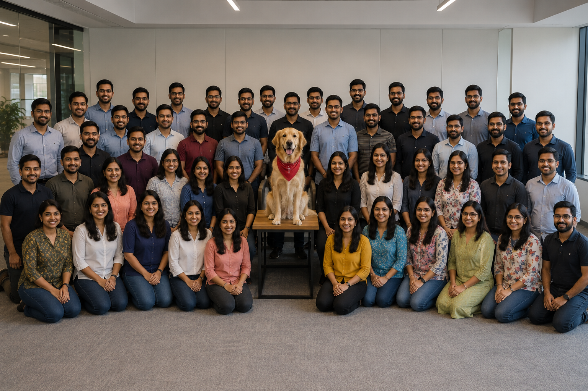
Different Object
A dog among cats can be considered an outlier because it differs substantially from the majority group.
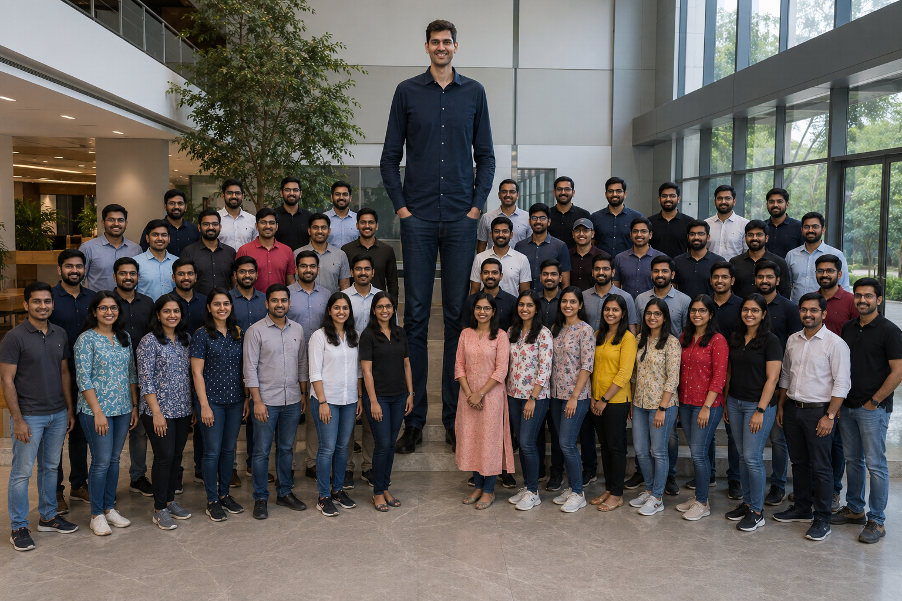
Extreme Height
An extremely tall individual compared to the surrounding population may represent an outlier.
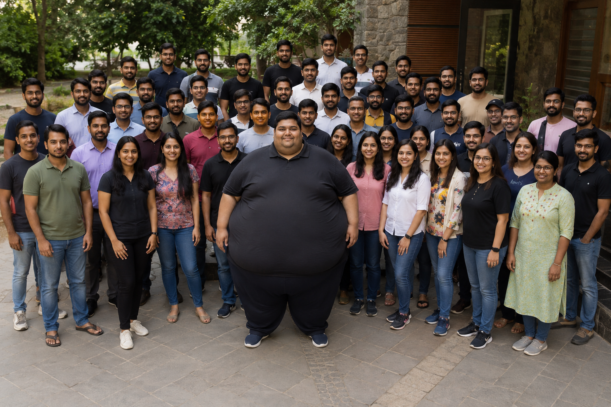
Distinct Observation
An observation that differs strongly from the majority pattern can be flagged as an outlier.
Images generated for illustrative purposes.
Definitions
1. Amplitude Outliers
An amplitude outlier is a functional observation that follows a similar overall shape as the majority of curves but has unusually large or small magnitude variations.
\[ y(t) = a\,\mu(t) \]
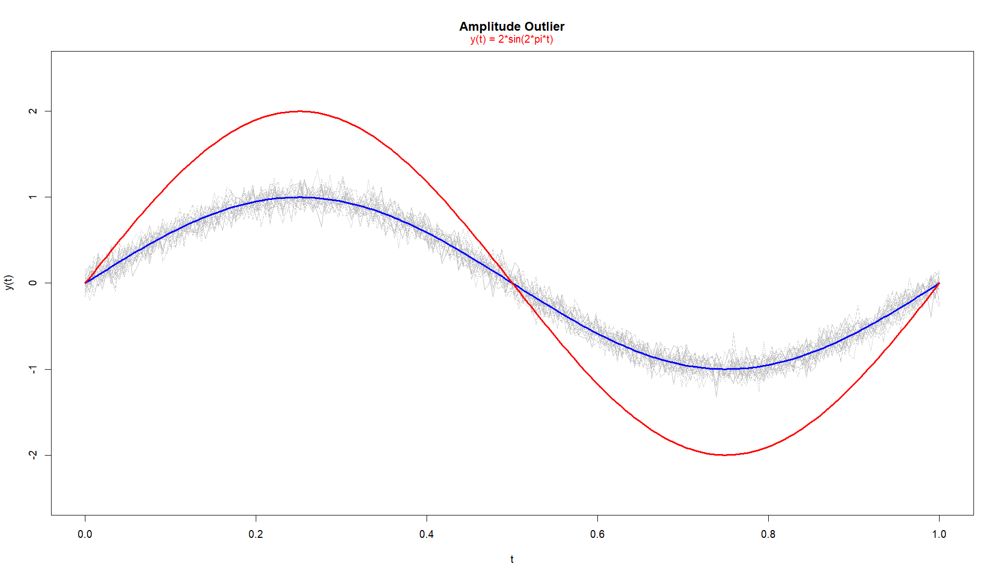
2. Magnitude Outliers
A magnitude outlier is a functional observation whose values are consistently larger or smaller than the central function while preserving a similar shape.
\[ y(t) = \mu(t) + c \]
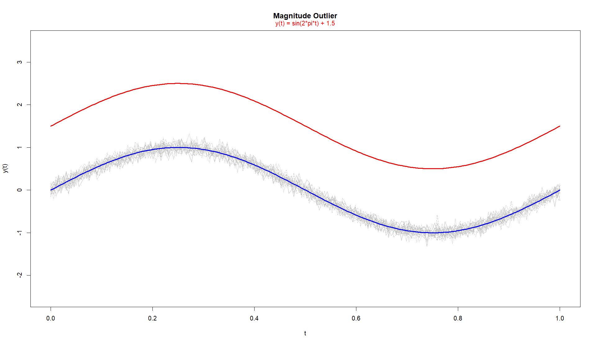
3. Shape Outliers
A shape outlier is a functional observation whose overall pattern or shape differs from the central tendency of the sample, regardless of its magnitude or amplitude.
\[ y(t) \not\approx a \cdot \mu(t) + c \]
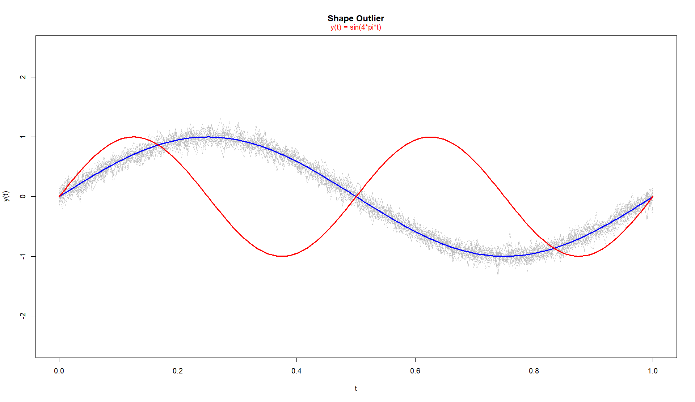
4. Trend Outliers
Trend outliers are curves that exhibit unusual temporal patterns compared to the majority of observations in the dataset.
| Type | Example |
|---|---|
| Linear trend | \(a + bt\) |
| Polynomial trend | \(a + bt + ct^{2}\) |
| Exponential trend | \(ae^{bt}\) |
| Cyclic trend | Repeated periodic fluctuations over time |
4. Trend Outliers
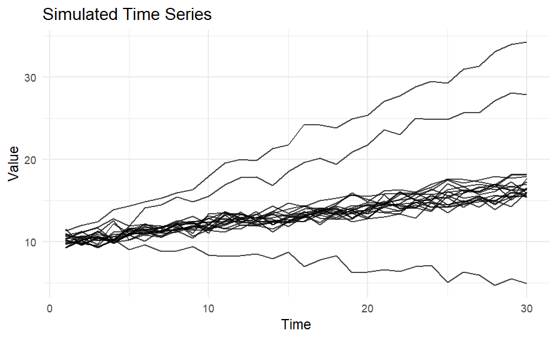
Simulated time series illustrating different trends.
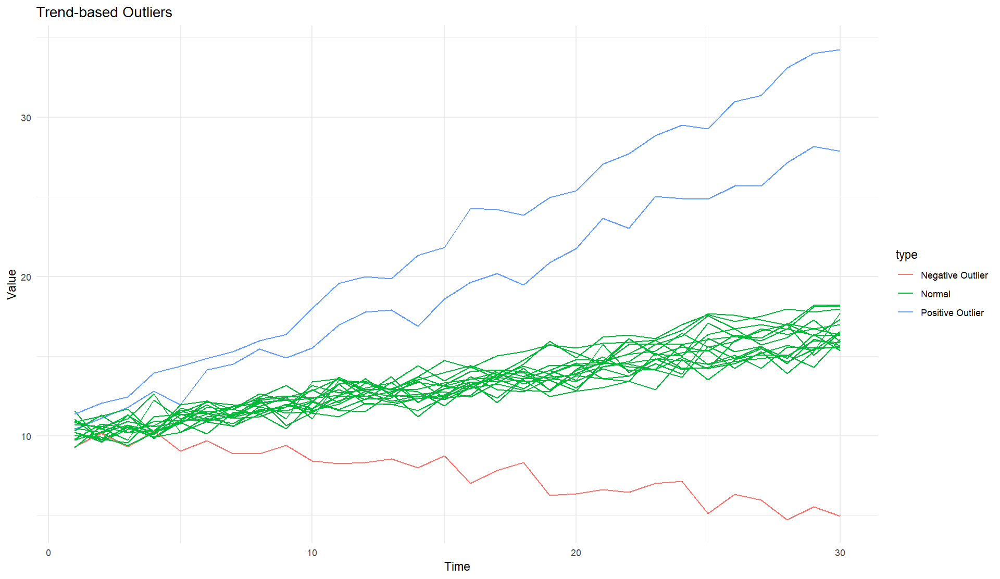
Examples of baseline linear trend patterns.
A linear trend is fitted to each curve, and observations with slope values below the 5th percentile or above the 95th percentile are identified as outliers.
5. Depth Outliers
A data depth concept can be viewed as a generalization of quantiles to multivariate data.
It measures the centrality (depth) of a given point in \(\mathbb{R}^n\), assuming
\(X_1, \ldots, X_k\) is a random sample from \(\mathbb{R}^n\) [5], [6]
Mahalanobis Depth
\[ D_M(x)=\frac{1}{1+(x-\mu)^\top \Sigma^{-1}(x-\mu)} \] [5]
Here, \(\mu\) and \(\Sigma\) denote the mean vector and covariance matrix, respectively. Larger depth values indicate more central observations.
5.1 Mahalanobis Depth
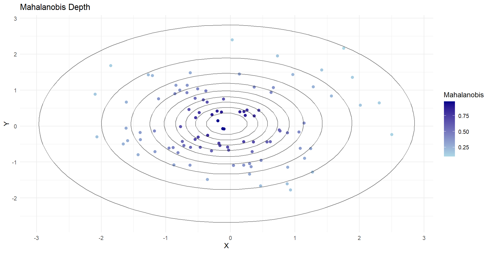
5.2 Tukey Depth [7]
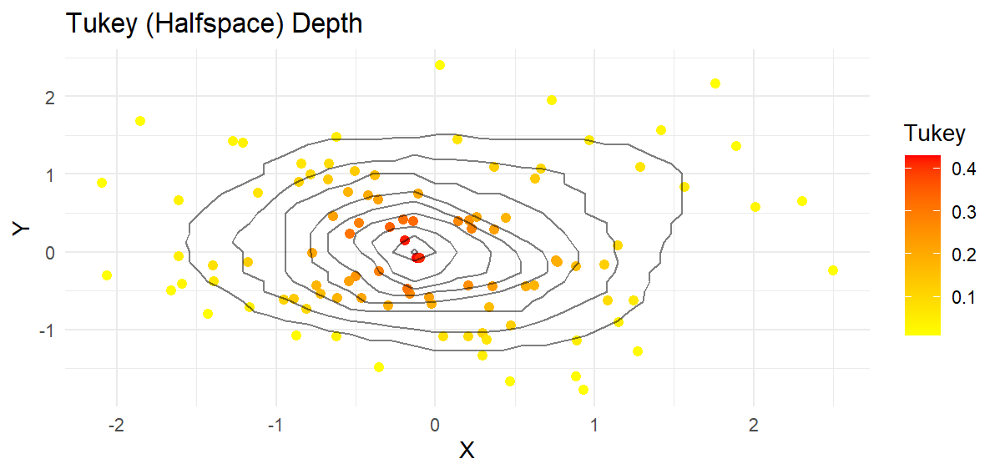
5.3 Spatial Depth [8]
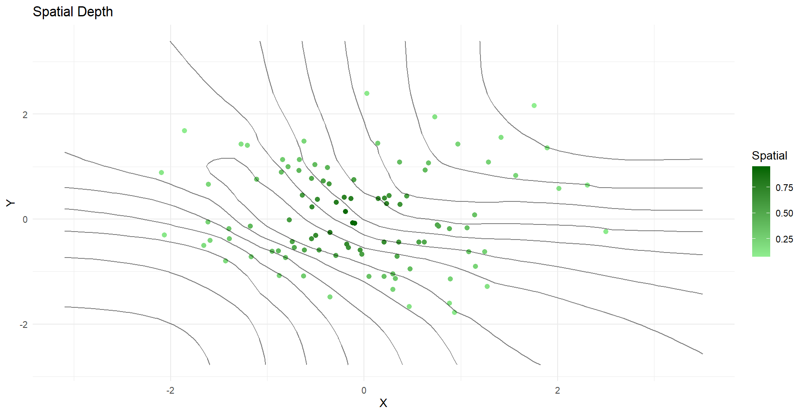
5.1 Illustration of Outlier Dtection using Malhanobis Depth
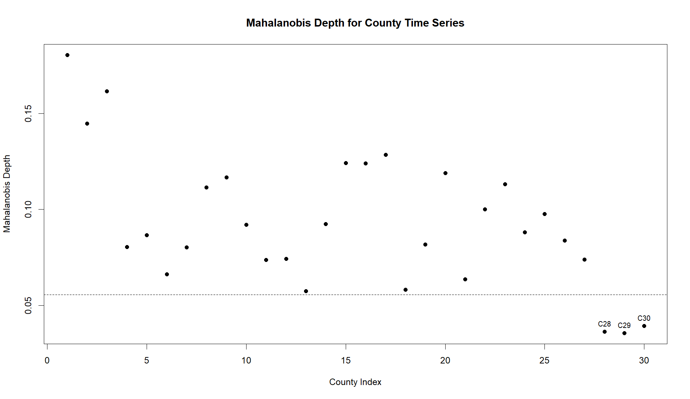
Depth values calculated for different curves. Small depths values are considered outliers
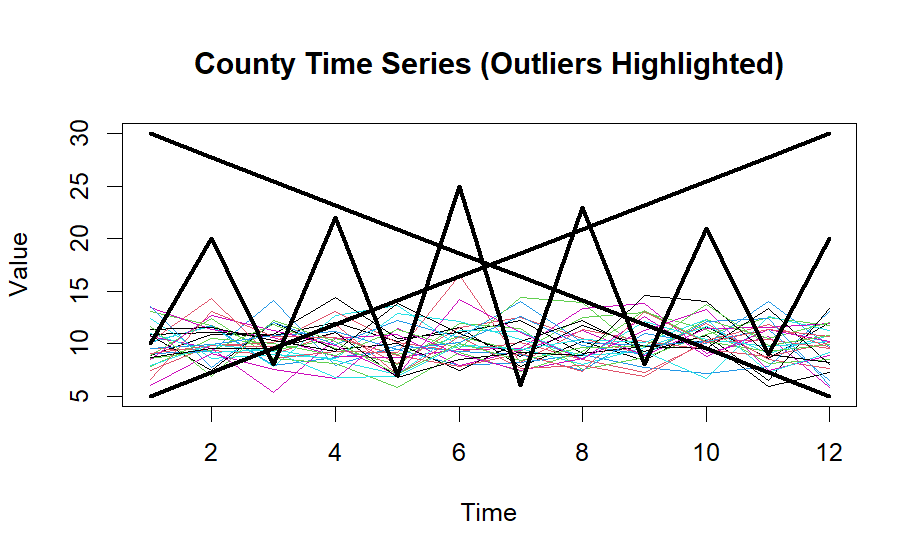
The plots of curves and outliers highligted in black .
6. Frequency Outlier
Frequency outliers are curves whose oscillation frequency differs significantly from that of the majority of curves in the dataset.
\[ y(t)=\sin(2\pi f t) \]
where (f) denotes the oscillation frequency.
\[ f=\frac{1}{T} \]
where (T) is the period of oscillation.
6. Illustration of Frequency Outliers
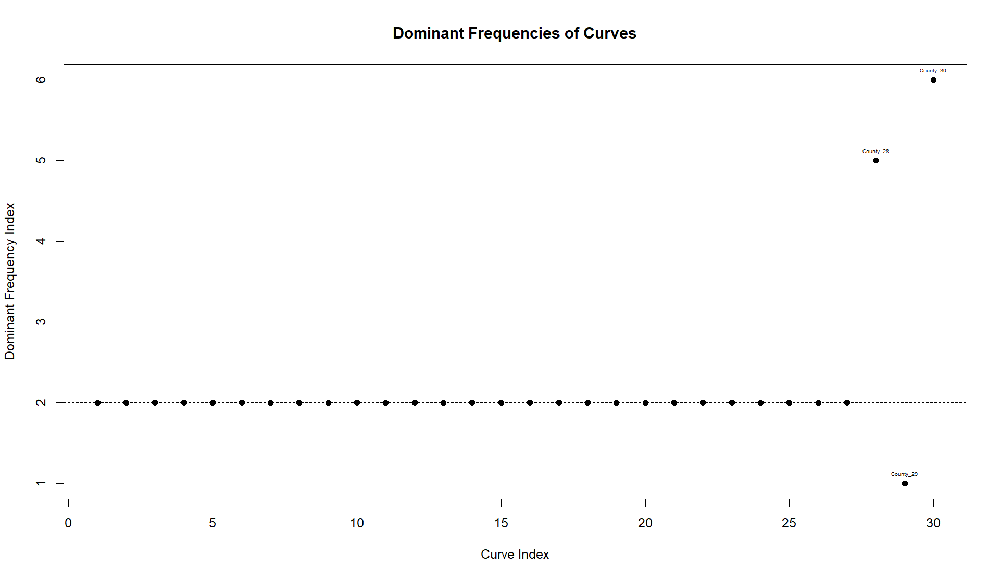
Dominant frequency estimated for each county using spectral analysis.
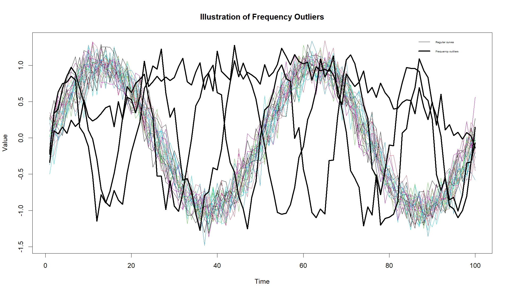
Highlighted curves correspond to counties whose oscillation frequencies differ substantially from the majority of curves.
7. Distance Outlier
Distance outliers are functional observations whose distance from a central reference curve, such as the mean or median curve, is unusually large or unusually small compared to the majority of curves in the dataset.
\[ d_i = d\!\left(y_i(t),\, \mu(t)\right) \]
where \(mu(t)\) denotes the central curve and \(d_i\)is the distance measure.
\[ d_i > Q_{1-\alpha} \]
may be classified as a distance outlier, where \(Q_{1-\alpha}\) denotes the \((1-\alpha)\)-quantile of the distance distribution.
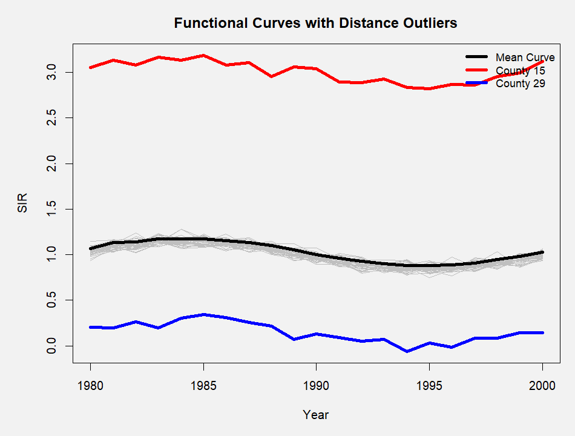
Illustration of distance-based outlier curves.
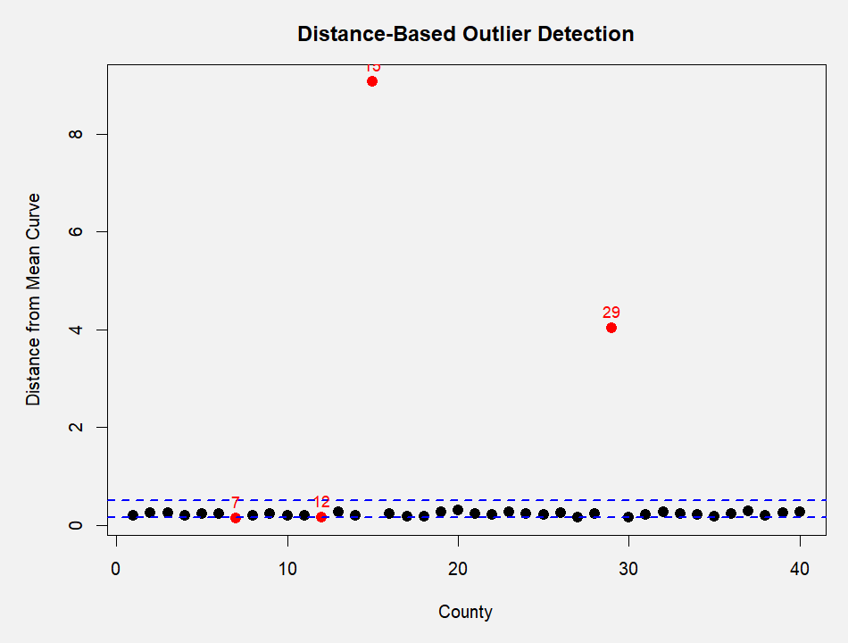
Distance values used to identify outlying curves.
Methods to Detect Outliers
Methods Used
SVTT Method using SaTScan
Functional Box-Plot
Trend-Based Outliers
- Linear Trend Outliers
Distance-Based Method
Depth-Based Method
Functional Depth
MUOD
(Massive Unsupervised Outlier Detection)
1. Spatial Variation in Temporal Trends (SVTT)
Detects regions with unusual temporal trends.
Compares trends inside and outside a spatial window.
Implemented in SaTScan using the Discrete Poisson Model.
Types:
- Linear SVTT
- Quadratic SVTT
\[ H_0:\text{Trend}_{in}=\text{Trend}_{out} \]
\[ H_1:\text{Trend}_{in}\neq \text{Trend}_{out} \]
2. Functional Box-Plot
Extension of the classical boxplot for functional data.
Summarizes an entire collection of curves using functional depth.
Displays:
- Median curve
- Central region
- Envelope
- Functional outliers
Provides an overall visualization of variability and outlying behavior in functional data.
2. Functional Boxplot Illustration

2. Trend-Based Outliers
Let
\[ y_1(t), y_2(t), \ldots, y_k(t) \]
denote the temporal functions of \(k\) regions observed at time points
\[ t_1, t_2, \ldots, t_n. \]
Algorithm
Step 1:
Fit a suitable trend model separately for each region using a small number of parameters, such as Linear, Quadratic, and Exponential trends.
For example, a linear trend model may be written as
\[ y_i(t)=\beta_{0i}+\beta_{1i}t+\varepsilon_i(t), \]
where \(\beta_{0i}\) and \(\beta_{1i}\) represent the trend parameters for region \(i\).
Step 2:
Treat the estimated parameter vectors
\[ (\hat{\beta}_{0i}, \hat{\beta}_{1i}) \]
as observations in lower-dimensional space and apply standard outlier detection techniques.
Step 3:
Regions whose parameter vectors are detected as unusual are identified as trend-based outliers.
3. Distance-Based Outliers
Let
\[ y_1(t), y_2(t), \ldots, y_k(t) \]
denote the temporal functions of \(k\) regions observed at time points
\[ t_1, t_2, \ldots, t_n. \]
Algorithm
Step 1:
Compute the distance between each curve and a central curve, such as the mean or median curve.
For example, the Euclidean distance between curve \(y_i(t)\) and the central curve \(c(t)\) is
\[ d_i= \sqrt{ \sum_{j=1}^{n} \left( y_i(t_j)-c(t_j) \right)^2 }. \]
Step 2:
Use the obtained distances as one-dimensional observations and apply standard outlier detection methods.
Step 3:
Curves having unusually large distances from the central curve are identified as distance-based outliers.
3. Commonly Used Distance Measures
Euclidean Distance
\[ d(x,y)= \sqrt{ \sum_{i=1}^{n}(x_i-y_i)^2 } \]
Manhattan Distance
\[ d(x,y)= \sum_{i=1}^{n}|x_i-y_i| \]
Mahalanobis Distance
\[ d(x,y)= \sqrt{ (x-y)^\top \Sigma^{-1}(x-y) } \]
Cosine Distance
\[ d(x,y)= 1- \frac{x^\top y} {\|x\|\|y\|} \]
4. Depth-Based Outliers
Let
\[ y_1(t), y_2(t), \ldots, y_k(t) \]
denote the temporal functions of \(k\) regions observed at time points
\[ t_1, t_2, \ldots, t_n. \]
Algorithm
Step 1:
Compute a depth value for each curve, which measures the centrality of the curve relative to the remaining curves.
A general depth function may be written as
\[ D(y_i \mid Y), \]
where \(Y=\{y_1,y_2,\ldots,y_k\}\) denotes the collection of all curves.
Step 2:
Use the obtained depth values as one-dimensional observations and apply standard outlier detection methods.
Step 3:
Curves with unusually small depth values are identified as depth-based outliers.
Commonly Used Depth Measures
Mahalanobis Depth
\[ D_M(x)= \frac{ 1 }{ 1+(x-\mu)^\top\Sigma^{-1}(x-\mu) } \]
Spatial Depth
\[ D_S(x)= 1- \left\| \frac{1}{n} \sum_{i=1}^{n} \frac{x-X_i}{\|x-X_i\|} \right\| \]
Tukey Depth
\[ D_T(x)= \inf_{u\in S^{d-1}} P(u^\top X \le u^\top x) \]
Modified Band Depth (MBD)
\[ \text{MBD}(x)= \binom{n}{2}^{-1} \sum_{i<j} \frac{ \lambda(A(x;x_i,x_j)) }{ \lambda(T) } \]
\(A(x;x_i,x_j)\) : set where \(x(t)\) lies inside the band formed by \(x_i(t)\) and \(x_j(t)\)
\(\lambda(\cdot)\) : Lebesgue measure
\(T\) : observation time domain
\(X\) : random vector
\(u\) : projection direction
\(S^{d-1}\) : unit sphere in \(\mathbb{R}^d\)
Simulation Study Results
Simulation Data Generation
Synthetic datasets were generated under different temporal trend scenarios:
- Parabolic
- Linear
- Cyclic
- Increasing
- Decreasing
For each spatial unit \(i=1,\ldots,n\) and time point \(t=1,\ldots,T\),
\[ Y_{it}\sim \text{Poisson}(\lambda_{it}), \]
where
\[ \lambda_{it}=E_{it}\theta_{it}. \]
The expected number of cases was assumed constant across space and time:
\[ E_{it}=100. \]
Different temporal risk functions \(\theta_{it}\) were used to generate various trend patterns.
Simulated Temporal Trends

Parabolic Trends
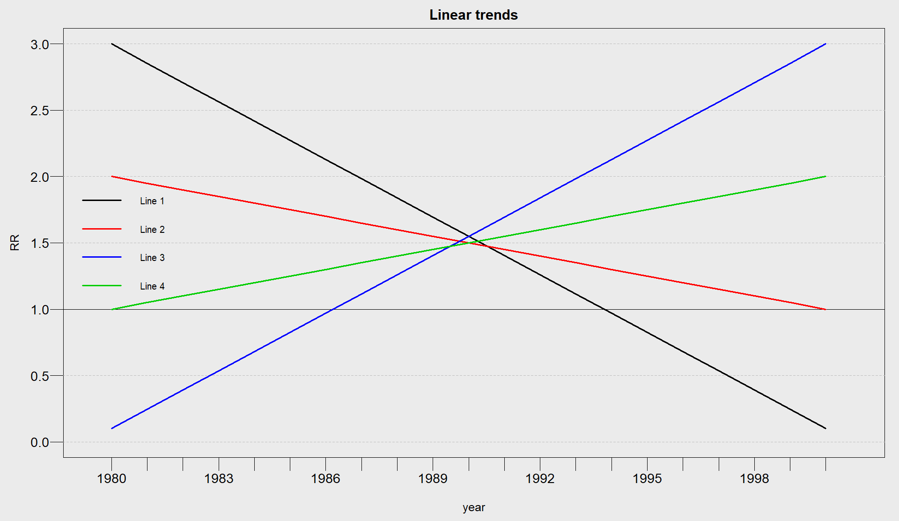
Linear Trends
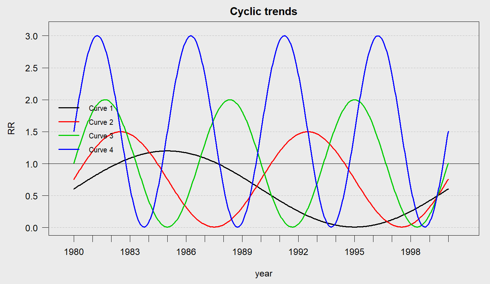
Cyclic Trends
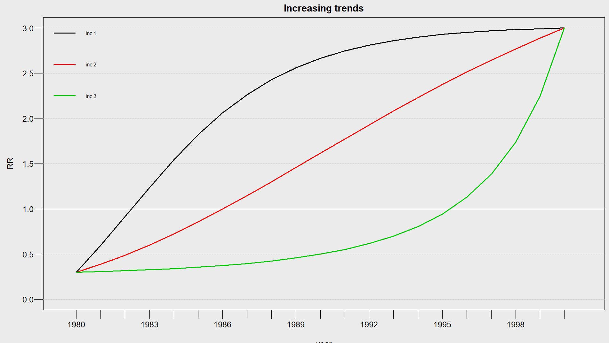
Increasing Trends
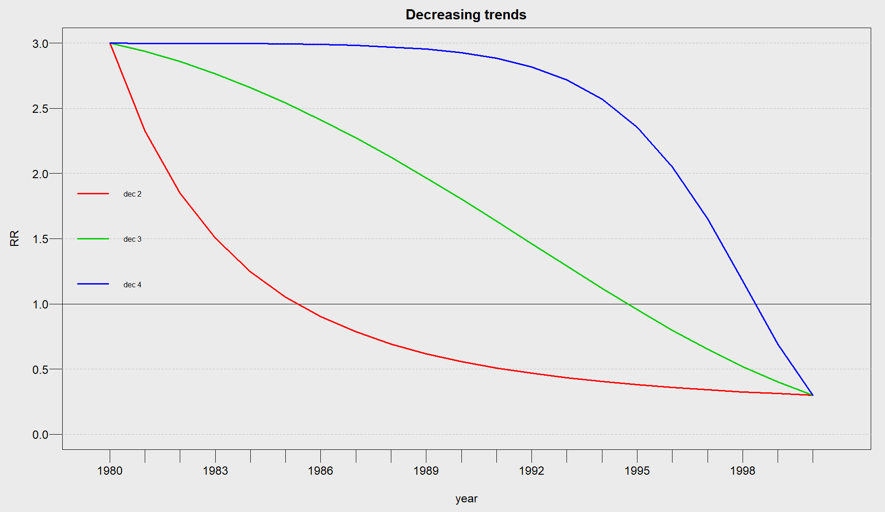
Decreasing Trends
Metrics Used for Analysis
Sensitivity
\[ \text{Sensitivity}= \frac{TP}{TP+FN} \]
Proportion of true outliers correctly identified.
Specificity
\[ \text{Specificity}= \frac{TN}{TN+FP} \]
Proportion of normal observations correctly identified.
Positive Predictive Value (PPV)
\[ \text{PPV}= \frac{TP}{TP+FP} \]
Proportion of detected outliers that are truly outliers.
Purity
\[ \text{Purity}= \frac{1}{N}\sum_k \max_j |c_k \cap t_j| \]
Measures homogeneity within detected groups.
Rand Index (RI)
\[ RI= \frac{TP+TN}{TP+TN+FP+FN} \]
Measures similarity between true and detected classifications.
Adjusted Rand Index (ARI)
\[ ARI= \frac{RI-\mathbb{E}(RI)} {\max(RI)-\mathbb{E}(RI)} \]
Chance-adjusted version of RI.
Jaccard Index
\[ J= \frac{TP}{TP+FP+FN} \]
Measures overlap between detected and true outlier sets.
Computation Time
Average time required to perform outlier detection for 1 dataset.
Sensitivity Heatmap
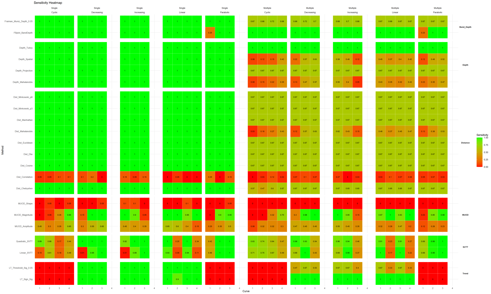
Specificity Heatmap
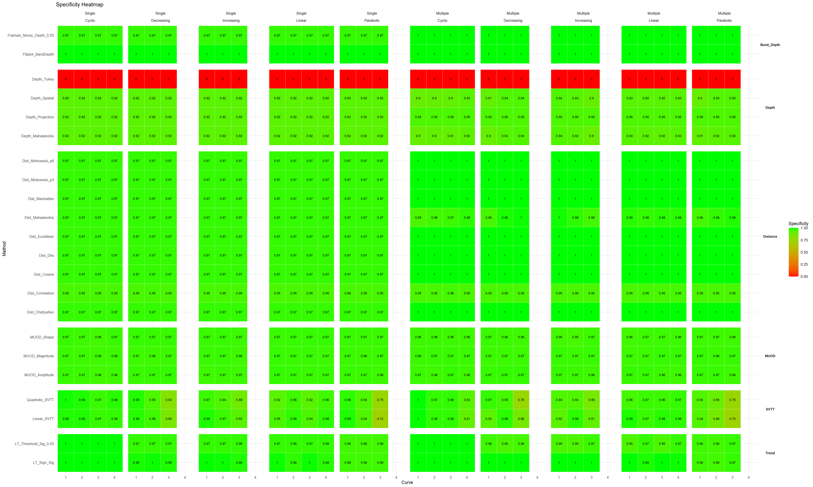
PPV Heatmap
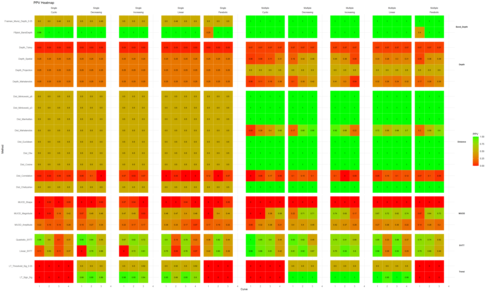
Purity Heatmap
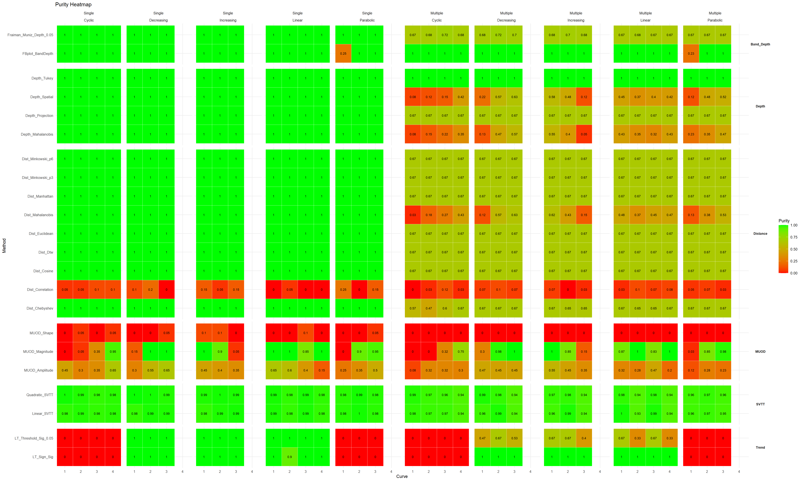
ARI Heatmap
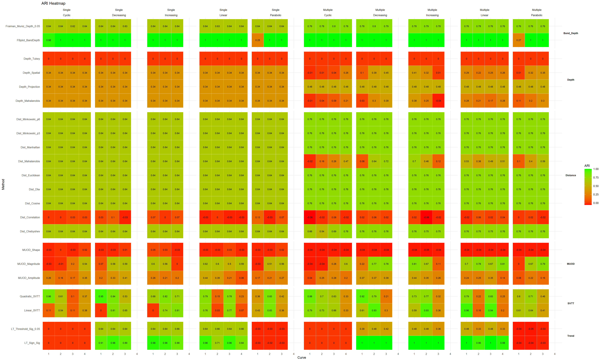
RI Heatmap
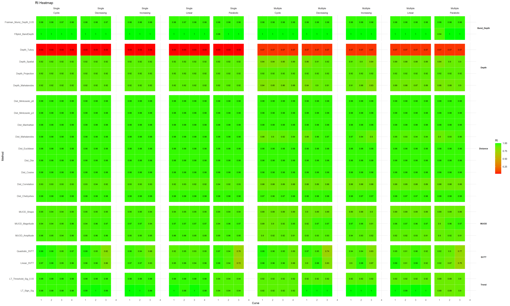
Jaccard Heatmap
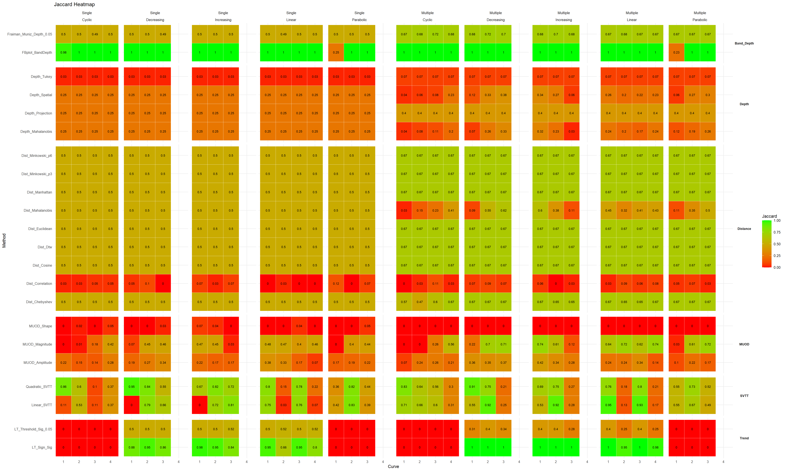
Computational Time Heatmap
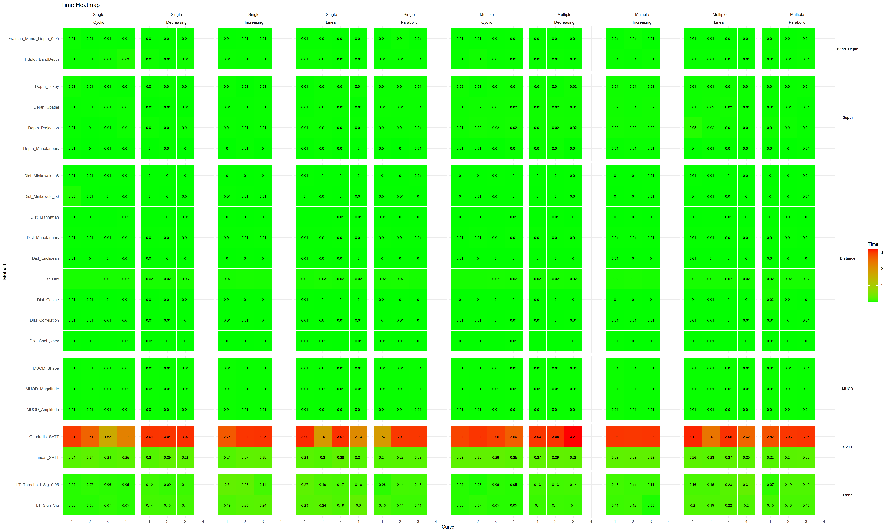
Thank You
धन्यवाद
شکریہ
ধন্যবাদ
شكراً
Gracias
धन्यवाद!